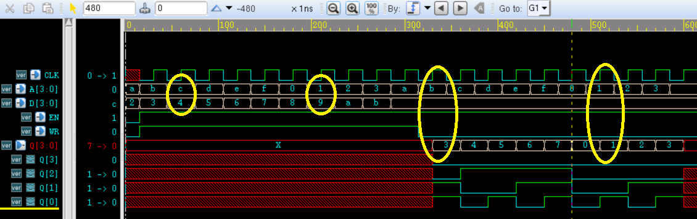

关键词： defparam，参数，例化，ram
当一个模块被另一个模块引用例化时，高层模块可以对低层模块的参数值进行改写。这样就允许在编译时将不同的参数传递给多个相同名字的模块，而不用单独为只有参数不同的多个模块再新建文件。
参数覆盖有 2 种方式：1）使用关键字 defparam，2）带参数值模块例化。
defparam 语句
可以用关键字 defparam 通过模块层次调用的方法，来改写低层次模块的参数值。
例如对一个单口地址线和数据线都是 4bit 宽度的 ram 模块的 MASK 参数进行改写：
实例
defparam u_ram_4x4.MASK = 7 ;
ram_4x4 u_ram_4x4
(
.CLK (clk),
.A (a[4-1:0]),
.D (d),
.EN (en),
.WR (wr), //1 for write and 0 for read
.Q (q) );
ram_4x4 的模型如下：
实例
(
input CLK ,
input [4-1:0] A ,
input [4-1:0] D ,
input EN ,
input WR , //1 for write and 0 for read
output reg [4-1:0] Q );
parameter MASK = 3 ;
reg [4-1:0] mem [0:(1<<4)-1] ;
always @(posedge CLK) begin
if (EN && WR) begin
mem[A] <= D & MASK;
end
else if (EN && !WR) begin
Q <= mem[A] & MASK;
end
end
endmodule
对此进行一个简单的仿真，testbench 编写如下：
实例
module test ;
parameter AW = 4 ;
parameter DW = 4 ;
reg clk ;
reg [AW:0] a ;
reg [DW-1:0] d ;
reg en ;
reg wr ;
wire [DW-1:0] q ;
//clock generating
always begin
#15 ; clk = 0 ;
#15 ; clk = 1 ;
end
initial begin
a = 10 ;
d = 2 ;
en = 'b0 ;
wr = 'b0 ;
repeat(10) begin
@(negedge clk) ;
en = 1'b1;
a = a + 1 ;
wr = 1'b1 ; //write command
d = d + 1 ;
end
a = 10 ;
repeat(10) begin
@(negedge clk) ;
a = a + 1 ;
wr = 1'b0 ; //read command
end
end // initial begin
//instantiation
defparam u_ram_4x4.MASK = 7 ;
ram_4x4 u_ram_4x4
(
.CLK (clk),
.A (a[AW-1:0]),
.D (d),
.EN (en),
.WR (wr), //1 for write and 0 for read
.Q (q)
);
//stop simulation
initial begin
forever begin
#100;
if ($time >= 1000) $finish ;
end
end
endmodule // test
仿真结果如下：
图中黄色部分，当地址第一次为 c 时写入数据 4， 当第二次地址为 c 时读出数据为 4；可知此时 ram 行为正确，且 MASK 不为 3。 因为 ram 的 Q 端 bit2 没有被屏蔽。
当第一次地址为 1 时写入数据为 9，第二次地址为 1 时读出的数据却是 1，因为此时 MASK 为 7，ram 的 Q 端信号 bit3 被屏蔽。由此可知，MASK 参数被正确改写。

带参数模块例化
第二种方法就是例化模块时，将新的参数值写入模块例化语句，以此来改写原有 module 的参数值。
例如对一个地址和数据位宽都可变的 ram 模块进行带参数的模块例化：
实例
u_ram
(
.CLK (clk),
.A (a[AW-1:0]),
.D (d),
.EN (en),
.WR (wr), //1 for write and 0 for read
.Q (q)
);
ram 模型如下：
实例
#( parameter AW = 2 ,
parameter DW = 3 )
(
input CLK ,
input [AW-1:0] A ,
input [DW-1:0] D ,
input EN ,
input WR , //1 for write and 0 for read
output reg [DW-1:0] Q
);
reg [DW-1:0] mem [0:(1<<AW)-1] ;
always @(posedge CLK) begin
if (EN && WR) begin
mem[A] <= D ;
end
else if (EN && !WR) begin
Q <= mem[A] ;
end
end
endmodule
仿真时，只需在上一例的 testbench 中，将本次例化的模块 u_ram 覆盖掉 u_ram_4x4, 或重新添加之即可。
仿真结果如下。由图可知，ram 模块的参数 AW 与 DW 均被改写为 4， 且 ram 行为正确。

区别与建议
(1) 和模块端口实例化一样，带参数例化时，也可以不指定原有参数名字，按顺序进行参数例化，例如 u_ram 的例化可以描述为：
ram #(4, 4) u_ram (......) ;
(2) 当然，利用 defparam 也可以改写模块在端口声明时声明的参数，利用带参数例化也可以改写模块实体中声明的参数。例如 u_ram 和 u_ram_4x4 的例化分别可以描述为：
实例
defparam u_ram.DW = 4 ;
ram u_ram(......);
ram_4x4 #(.MASK(7)) u_ram_4x4(......);
(3) 那能不能混合使用这两种模块参数改写的方式呢？当然能！前提是所有参数都是模块在端口声明时声明的参数或参数都是模块实体中声明的参数，例如 u_ram 的声明还可以表示为（模块实体中参数可自行实验验证）：
实例
ram #(.DW(4)) u_ram (......); //也只有我这么无聊才会实验这种写法
(4) 那如果一个模块中既有在模块在端口声明时声明的参数，又有在模块实体中声明的参数，那这两种参数还能同时改写么？例如在 ram 模块中加入 MASK 参数，模型如下：
实例
#( parameter AW = 2 ,
parameter DW = 3 )
(
input CLK ,
input [AW-1:0] A ,
input [DW-1:0] D ,
input EN ,
input WR , //1 for write and 0 for read
output reg [DW-1:0] Q );
parameter MASK = 3 ;
reg [DW-1:0] mem [0:(1<<AW)-1] ;
always @(posedge CLK) begin
if (EN && WR) begin
mem[A] <= D ;
end
else if (EN && !WR) begin
Q <= mem[A] ;
end
end
endmodule
此时再用 defparam 改写参数 MASK 值时，编译报 Error：
实例
defparam u_ram.AW = 4 ;
defparam u_ram.DW = 4 ;
defparam u_ram.MASK = 7 ;
ram u_ram (......);
//模块实体中parameter用defparam改写也会报Error
defparam u_ram.MASK = 7 ;
ram #(.AW(4), .DW(4)) u_ram (......);
重点来了！！！如果你用带参数模块例化的方法去改写参数 MASK 的值，编译不会报错，MASK 也将被成功改写！
ram #(.AW(4), .DW(4), .MASK(7)) u_ram (......);
可能的解释为，在编译器看来，如果有模块在端口声明时的参数，那么实体中的参数将视为 localparam 类型，使用 defparam 将不能改写模块实体中声明的参数。
也可能和编译器有关系，大家也可以在其他编译器上实验。
（5）建议，对已有模块进行例化并将其相关参数进行改写时，不要采用 defparam 的方法。除了上述缺点外，defparam 一般也不可综合。
（6）而且建议，模块在编写时，如果预知将被例化且有需要改写的参数，都将这些参数写入到模块端口声明之前的地方（用关键字井号 # 表示）。这样的代码格式不仅有很好的可读性，而且方便调试。
源码下载
阶段总结
其实，介绍到这里，大家完全可以用前面学习到的 Verilog 语言知识，去搭建硬件电路的小茅草屋。对，是小茅草屋。因为硬件语言对应实际硬件电路的这种特殊性，在用 Verilog 建立各种模型时必须考虑实际生成的电路是什么样子的，是否符合实际要求。有时候 rtl 仿真能通过，但是最后生成的实际电路可能会工作异常。
所以，要为你的小茅草屋添砖盖瓦，还需要再学习下进阶部分。当然，进阶部分也只能让你的小茅草屋变成硬朗的砖瓦房，能抵挡风雪交加，可能遇到地震还是会垮塌。
如果你想巩固下你的砖瓦房，去建一套别墅，那你需要再学习下 Verilog 高级篇知识，例如 PLI（编程语言接口）、UDP（用户自定义原语），时序约束和时序分析等，还需要多参与项目工程积累经验，特别注意一些设计技巧，例如低功耗设计、异步设计等。当然学会用 SystemVerilog 去全面验证，又会让你的建筑增加一层防护盾。
但是如果你想把数字电路、Verilog 所有的知识学完，去筑一套防炮弹的总统府，那真的是爱莫能助。因为，学海无涯，回头没岸哪。
限于篇幅，这里只介绍下进阶篇。有机会，高级篇，技巧篇，也一并补上。

点我分享笔记